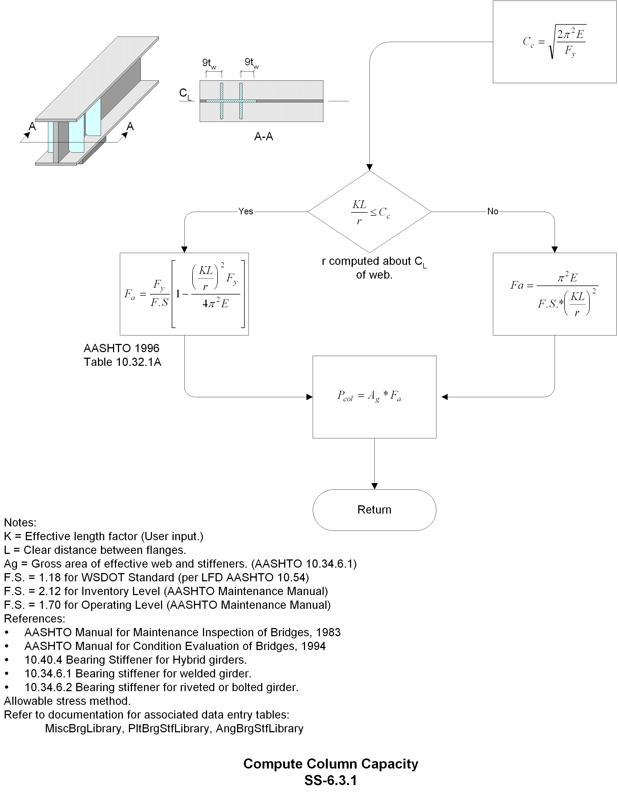

SteelBridg LRFR
Contents:
Getting Started
Data Entry
Theory
Input
Shapes
Members
Deck Slab
Load Generation
Capacity and Rating Theory
[SS-5.1.2] Compute Capacities
[SS-5.2.1.1] Compactness of Type A(1)
[SS-5.2.1.1] Compactness of Type A (2)
[SS-5.2.1.3] Mu for Type A
[SS-5.2] Cal. Capacity for Line Member
[SS-5.2.1.3.1.1] Compute Mr for Section Type A, unbraced noncompact section
[SS-5.2.1.3.1] Compute Mu for Type A, unbraced noncompact section
[SS-5.2.1.3.1.2] Compute Rb for Section Type A, unbraced noncampact section
[SS-5.2.1] Negative Moment Capacity
[SS-5.2.2.4.1] Compute Mu for unbraced noncompact section Type A
[SS-5.2.2.2] Compactness of Type B (2)
[SS-5.2.2.1.1] Compactness of Type A (2) Unsymmetrical Member Check
[SS-5.2.2] Positive Moment Capacity
[SS-5.2.2.4] Mu for Type A
[SS-5.2.2.2] Compactness of Type B (1)
[SS-5.2.2.3.1] Compute Mp, Dcp, for Type C (B)
[SS-5.2.3] Shear capacity
[SS-5.2.2.4.1.2] Compute Rb for Section Type A
[SS-5.2.2.5.2] Compute Mu, for Section Type C w/ non-compact negative moment
[SS-5.2.2.1] Compactness of Type A (1)
[SS-5.2.2.3.1] Compute Mp, Dcp, for Type C
[SS-5.2.2.4.1.1] Compute Mr for Type A, unbraced noncompact section
[SS-5.2.2.1] Compactness of Type A (2)
[SS-5.2.2.5.1] Compute Mu, for Section Type C w/ compact negative moment
[SS-5.2.2.5] Compute Mu for Section Type C
[SS- 5.3] Compute Capacity of Non-line Member
[SS-5.3.1] Compute Strength Ratio for Tension / Moment
[SS- 5.3.2] Compute Mp, Fe, for compression members
[SS-5.3.3] Compute Mu for Box Section
[SS-5.3.4] Compute Mu for Open Section
[SS-5.3.5] Compute Strength Ratio for Compression / Moment
[SS-5.3.6] Check local Slenderness Ratio for Compression Members
[SS-6.0] Compute Member Rating
[SS-6.1] Compute Line Member Rating
[SS-6.1.1] Compute Moment Rating Factor for WSDOT, Inventory, Operating Level
[SS-6.1.2] Compute Shear Rating Factor for WSDOT Inventory, Operating
[SS-6.3] Compute Bearing Rating
[SS-6.3.1] Compute Column Capacity
[SS-6.3.2] Compute Bearing on Stiffener
[SS-6.3.3] Compute Connection to Web
[SS-6.4] Compute Hinge Rating
[SS-6.4.1] Link Plate Tension
[SS-6.4.1.1] Compute Ag, An
[SS-6.4.2] Link Plate Bearing
[SS-6.4.3] Top & Bottom Pin Bearing
[SS-6.4.4] Left & Right Web Plate Bearing
[SS-6.4.5] Pin Shear (Double)
Frequently asked Questions
Examples
Tables
SteelBridg LRFR
»
Theory
»
[SS-6.3.1] Compute Column Capacity
View page source
[SS-6.3.1] Compute Column Capacity

